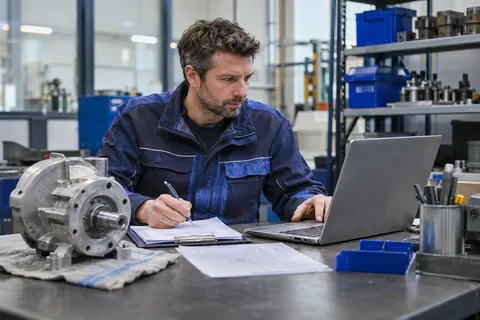

Workflow-automatisering
Van bestelmail naar conceptorder
Een bestelling komt per mail binnen. Wij richten de workflow zo in dat de order klaarstaat in uw systeem. Uw team controleert de uitzonderingen en geeft de bestelling vrij.
Fictief praktijkvoorbeeld
Wat gebeurt er met één bestelmail?
- Binnenkomst
Een klant bestelt
“Graag 24 dozen appelsap voor vrijdag. Leveren aan kaai 2.”
- Voorbereiding
De conceptorder staat klaar
- Artikel
- Appelsap
- Aantal
- 24 dozen
- Leverplaats
- Kaai 2
- Controle
Uw medewerker beslist
Op de klantenfiche staat kaai 1. De bestelling blijft open tot iemand de leverplaats heeft nagekeken.
Hoe loopt dit af?
De klant bevestigt kaai 2. De medewerker bevestigt de afwijking en geeft de bestelling vrij.
Waar beslist uw team?


De foto’s zijn gegenereerd ter illustratie.
Zo pakken we het aan
Breng één terugkerende taak mee. Samen volgen we een echt voorbeeld door uw systemen, van binnenkomst tot goedkeuring.
- 01
Workflowscan.
We kijken hoe het werk vandaag loopt en waar het handwerk zit.
- 02
Eén workflow kiezen.
De workflow die het meeste tijd kost en het snelst iets oplevert.
- 03
Automatiseren.
Waar het kan, bouwen we op de systemen die u al gebruikt. AI zetten we in waar mails of documenten gelezen moeten worden.
- 04
Meten.
We vergelijken de tijd vóór en na. Werkt het, dan nemen we de volgende workflow.
Rekenvoorbeeld
Hoeveel tijd gaat naar overtypen?
Tel de minuten die één medewerker hier op een werkdag aan besteedt. De grafiek rekent met 220 werkdagen per jaar.
Bij één uur per dag en € 17,25 per uur kost dat € 3.795 per medewerker per jaar. Welk deel u kunt besparen, meten we pas in de praktijk.
Wat kmo’s tegenhoudt, en hoe wij dat oplossen
Lees de zes drempels en onze aanpak
Uit 71 studies over AI in kmo’s komen telkens dezelfde drempels terug.
- Geen kennis in huis
- Wij brengen de kennis mee en trainen uw mensen op hun eigen taken.
- Te duur
- We starten met één proces en meten wat het oplevert. Werkt het niet, dan stoppen we.
- Onze IT is er niet klaar voor
- Waar het kan, werken we met de systemen die u al hebt.
- Onze data zijn niet op orde
- We starten met wat elke kmo heeft: mails, Excel-lijsten en documenten.
- Wie houdt de controle?
- De AI bereidt voor. Een medewerker of de zaakvoerder beslist.
- Levert het iets op?
- We meten de tijd vóór en na, per proces.
Bron: Oldemeyer, Jede & Teuteberg, Management Review Quarterly, 2025
Veelgestelde vragen
Moeten we nieuwe software kopen?
Meestal niet. Waar het kan, werken we met wat u al hebt. Is er toch iets nodig, dan bespreken we dat vooraf.
Wat als de automatisering een fout maakt?
Bij gevoelige stappen keurt een medewerker eerst goed. Er vertrekt niets naar een klant zonder dat u dat zo beslist.
Wat kost het?
De workflowscan is op aanvraag. Daarna hangt de prijs af van de workflow. We meten eerst wat het u oplevert.
Wanneer past Orion beter?
Voor klantvragenlijsten in de voedingssector zoekt Orion in uw documenten en toont het de bron bij elk voorstel.
Ontdek OrionWelke gegevens typt uw team vandaag nog over?
Vertel ons welke workflow te veel handwerk vraagt. In een eerste gesprek bekijken we of automatiseren loont.